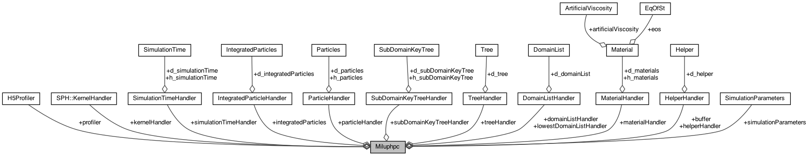
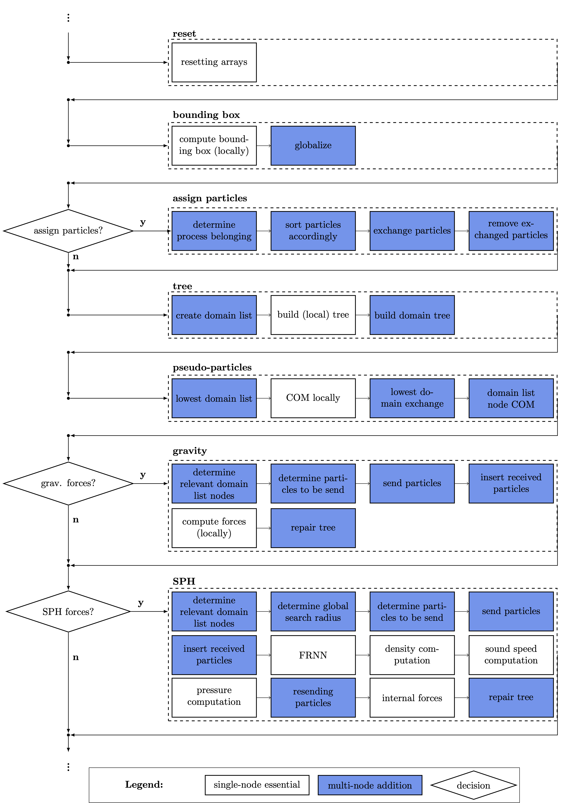
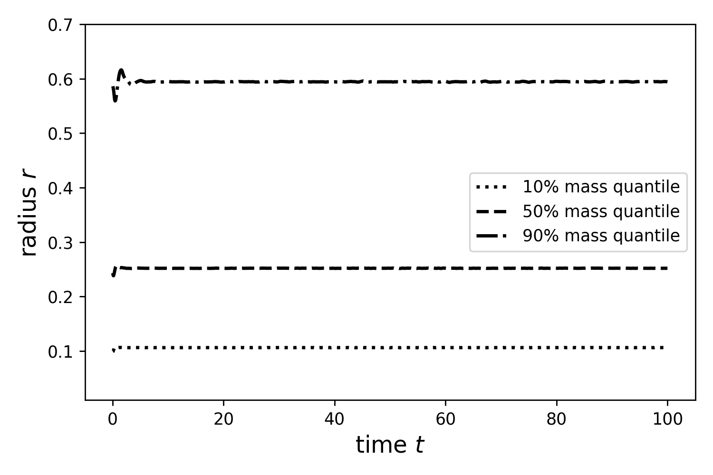
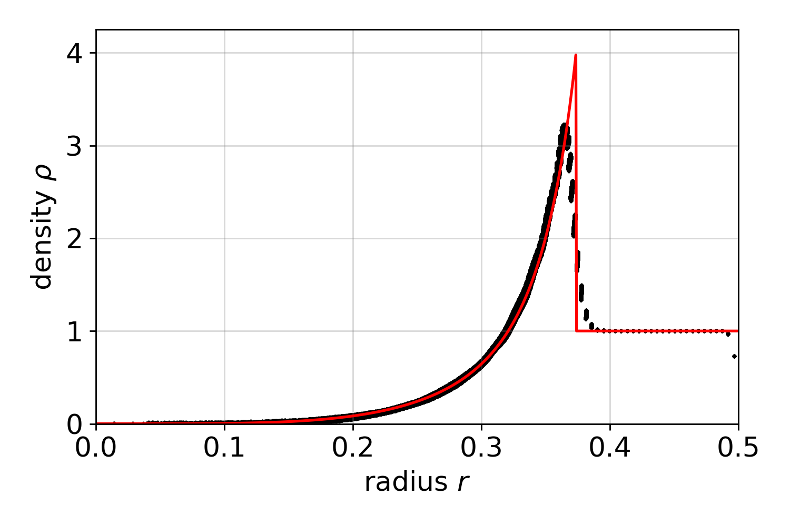

TOC
This project milupHPC implements a multi-GPU SPH & N-body (via Barnes-Hut) algorithm using C++11 and CUDA-aware MPI by combining already proven parallelization strategies and available implementations
with new ideas and parallelization strategies.
This project/repository includes:
src and include directory)Overview:
| Directory | Description |
|---|---|
| src/ & include/ | actual multi-GPU SPH & Barnes-Hut implementation |
| bin/ | binary to be executed, compile via make |
| build/ | build files, created by make |
| debug/ | debugging with gdb, lldb, cuda gdb (README) |
| config/ | config files for settings (.info) and material parameters (.cfg) (README) |
| testcases/ | test cases including Plummer and Sedov (README) |
| cluster/ | information to dispatch simulation on clusters using queing systems (README) |
| postprocessing/ | postprocessing scripts (README) |
| H5Renderer/ | H5Renderer implementation: basic Renderer (2D) (README) |
| utilities/ | utilities e.g. counting lines of code (README) |
| doc/ | create Doxygen documentation (README) |
| documents/ | several documents including files for README, instructions, notes, ... |
| images/ | images for MD files, ... |
implemented using C++ and CUDA-aware MPI.

| Directory | File | Description |
|---|---|---|
| ./ | include/ & src/ directory | |
| main.cpp | main: setting CUDA device, config parsing, loading parameters/settings, integrator selection, start of simulation | |
| miluphpc.h/cpp | abstract base class defining largest reoccuring part of the simulation (right hand side) and assorted high level functionalities | |
| particles.cuh/cu | particle class (SoA) and reduced particle class: particle attributes like mass, position, velocity, density, ... | |
| particle_handler.h/cpp | handler class for particle class including memory allocation and copy mechanisms | |
| simulation_time.cuh/cu | simulation time class: start & end time, time step, ... | |
| simulationtimehandler.cpp | handler for simulation time class including memory allocation and copy mechanisms | |
| device_rhs.cuh/cu | CUDA kernels for resetting arrays/variables (in between right hand sides) | |
| helper.cuh/cu | buffer class and sorting algorithms (based on CUDA cub) | |
| helper_handler.h/cpp | buffer class handler including memory allocation and copy mechanisms | |
| subdomainkeytree/ | (parallel) tree related functionalities including tree construction and domain decomposition | |
| tree.cuh/cu | (local) tree class and CUDA kernels for tree construction | |
| tree_handler.h/cpp | (local) tree class handler including memory allocation and kernel execution wrapper | |
| subdomain.cuh/cu | (parallel) tree structures including domain decomposition, SFC keys, ... | |
| subdomain_handler.h/cpp | (parallel) tree handling including memory allocation and kernel execution | |
| gravity/ | gravity related functionalities according to the Barnes-Hut method | |
| gravity.cuh/cu | gravity related CUDA kernels according to the Barnes-Hut method | |
| sph/ | Smoothed Particle Hydrodynamics (SPH) related functionalities | |
| kernel.cuh/cu | SPH smoothing kernels | |
| kernel_handler.cuh/cu | SPH smoothing kernels wrapper | |
| sph.cuh/cu | fixed radius near neighbor search (FRNN) and multi-node SPH | |
| density.cuh/cu | SPH density | |
| pressure.cuh/cu | SPH pressure | |
| soundspeed.cuh/cu | SPH speed of sound | |
| internal_forces.cuh/cu | SPH internal forces | |
| stress.cuh/cu | SPH stress (not fully implemented yet) | |
| viscosity.cuh/cu | SPH viscosity (not fully implemented yet) | |
| materials/ | material attributes (as needed for SPH) | |
| material.cuh/cu | material attributes class | |
| material_handler.cuh/cpp | material attributes handler class including loading from .cfg file | |
| integrator/ | child classes for miluphpc implementing integrate() |
|
| deviceexpliciteuler.cuh/cu | explicit Euler integrator device implementations | |
| explicit_euler.h/cpp | explicit Euler integrator logic and flow | |
| device_leapfrog.cuh/cu | leapfrog integrator device implementations | |
| leapfrog.h/cpp | leapforg integrator logic and flow | |
| devicepredictorcorrector_euler.cuh/cu | predictor-corrector Euler integrator device implementations | |
| predictorcorrectoreuler.h/cpp | predictor-corrector Euler integrator logic and flow | |
| processing/ | removing particles that moved to far from simulation center, ... | |
| kernels.cuh/cu | removing particles that moved to far from simulation center based on a sphere/cuboid | |
| utils/ | C++ utilites like config parsing, logging, profiling, timing, ... | |
| config_parser.h/cpp | config parser based on cxxopts | |
| h5profiler.h/cpp | HDF5 profiler based on HighFive | |
| logger.h/cpp | Logger class and functionalities (taking MPI ranks into account) | |
| timer.h/cpp | timing events based on MPI timer | |
| cuda_utils/ | CUDA utilities including wrappers, execution policy and math kernels | |
| cuda_launcher.cuh/cu | CUDA Kernel wrapper and execution policy | |
| cuda_runtime.h/cpp | thin CUDA API wrapper | |
| cuda_utilities.cuh/cu | utilities for CUDA including simple kernels, assertions, ... | |
| linalg.cuh/cu | linear algebra CUDA kernels |
The actual implementation and dispatching of the simulation includes
However, as the following suggests, the simulation differs for single and multi-node execution, whereas multi-node execution requires more and more sophisticated functionalities to ensure the correctness of the algorithms.

| library | licence | usage | link |
|---|---|---|---|
| GNU | GPLv3+ | compiler | gnu.org |
| OpenMPI | BSD 3-Clause | compiler, MPI Implementation | open-mpi.org |
| CUDA | CUDA Toolkit End User License Agreement | compiler, CUDA Toolkit and API | developer.nvidia.com |
| CUDA cub | BSD 3-Clause "New" or "Revised" License | device wide parallel primitives | github.com/NVIDIA/cub |
| HDF5 | HDF5 License (BSD-Style) | parallel HDF5 for I/O operations | hdf5group.org |
| HighFive | Boost Software License 1.0 | C++ wrapper for parallel HDF5 | github.com/BlueBrain/HighFive |
| Boost | Boost Software License 1.0 | config file parsing, C++ wrapper for MPI | boost.org |
| cxxopts | MIT license | command line argument parsing | github.com/jarro2783/cxxopts |
| libconfig | LGPL-2.1 | material config parsing | github.io/libconfig |
Multiple MPI implementations exist and can be used to execute milupHPC. However, the code was primarily tested with OpenMPI >= 4.0.
| library | licence | usage | link |
|---|---|---|---|
| OpenMPI | BSD 3-Clause | compiler, MPI Implementation | open-mpi.org |
ompi_info -a | grep "\-with\-cuda" | library | licence | usage | link |
|---|---|---|---|
| Boost | Boost Software License 1.0 | config file parsing, C++ wrapper for MPI | boost.org |
<boost version> e.g. 1_78_0$ wget https://boostorg.jfrog.io/artifactory/main/release/1.78.0/source/boost_<boost version>.tar.gz
$ tar zxvf boost_<boost version>.tar.gz
$ cd boost_<boost version>
$ ./bootstrap.sh --with-libraries=all
$ vim project-config.jam
$ >> using mpi ;
$ ./b2
$ ./b2 install --prefix=/usr| library | licence | usage | link |
|---|---|---|---|
| HighFive | Boost Software License 1.0 | C++ wrapper for parallel HDF5 | github.com/BlueBrain/HighFive |
git clone https://github.com/BlueBrain/HighFive.git| library | licence | usage | link |
|---|---|---|---|
| CUDA cub | BSD 3-Clause "New" or "Revised" License | device wide parallel primitives | github.com/NVIDIA/cub |
git clone https://github.com/NVIDIA/cub.git
git checkout 1.8.0 | library | licence | usage | link |
|---|---|---|---|
| cxxopts | MIT license | command line argument parsing | github.com/jarro2783/cxxopts |
git clone https://github.com/jarro2783/cxxopts.git| library | licence | usage | link |
|---|---|---|---|
| libconfig | LGPL-2.1 | material config parsing | github.io/libconfig |
<libconfig version> e.g. 1.7.3$ wget http://hyperrealm.github.io/libconfig/dist/libconfig-<libconfig version>.tar.gz
$ tar zxvf libconfig-<libconfig version>.tar.gz
$ cd libconfig-<libconfig version>
$ ./configure --prefix=/usr
$ make
$ make install| library | licence | usage | link |
|---|---|---|---|
| HDF5 | HDF5 License (BSD-Style) | parallel HDF5 for I/O operations | hdf5group.org |
e.g.:
$ wget https://support.hdfgroup.org/ftp/HDF5/releases/hdf5-1.12/hdf5-1.12.2/src/hdf5-1.12.2.tar.gz
$ tar -zxvf hdf5-1.12.0.tar.gz
$ cd hdf5
$ CC=mpicc CXX=mpic++ ./configure --prefix=/usr --enable-parallel --enable-hl
$ make installThe compilation process embraces the separate compilation of C++ (.h/.cpp) and CUDA (.cuh/cu) files and the subsequent linking of the object files.
The C++ and CUDA source files are automatically and recursively found via
$(shell find $(SRCDIR) -type f -name "*.$(SRCEXT)")$(shell find $(SRCDIR) -type f -name "*.$(CUDASRCEXT)")It is important to set the following flags/paths within the Makefile correctly:
CXX: the C++/MPI compiler e.g. mpic++CUDADIR: the directory of the CUDA installation e.g. nvcc
NVCC: the CUDA compiler, if NVCC not equal to $(CUDADIR)/bin/nvccOPENMPIDIR: OpenMPI directory (or more generally MPI implementation) e.g. /opt/openmpi-4.1.0HDF5DIR: HDF5 installation path/header files e.g. /usr/include/hdf5/openmpi (parallel version necessary!)HDF5LIB: HDF5 library files e.g. /usr/lib/hdf5/openmpiHEADERONLYDIR: path(s) to the header only libraries like cxxopts, HighFive, ...If all of the flags/paths are set correctly the Makefile can be used to compile the code:
make
make debug
./debug/cuda_debug.shmake single-precision (default: double-precision)make clean, make cleanermake remakeThe following shows the complete Makefile.
#Compiler/Linker
CXX := mpic++
CUDADIR := /usr/local/cuda-11.4
NVCC := $(CUDADIR)/bin/nvcc
OPENMPIDIR := /opt/openmpi-4.1.0
HDF5DIR := /usr/include/hdf5/openmpi
HDF5LIB := /usr/lib/x86_64-linux-gnu/hdf5/openmpi
HEADERONLYDIR := /usr/local/Headeronly
#Target binary
TARGET := runner
#Directories
SRCDIR := ./src
INCDIR := ./include
BUILDDIR := ./build
TARGETDIR := ./bin
RESDIR := ./resources
IDEASDIR := ./ideas
TESTDIR := ./test
DOCDIR := ./doc
DOCUMENTSDIR := ./documents
SRCEXT := cpp
CUDASRCEXT := cu
DEPEXT := d
OBJEXT := o
#Flags, Libraries and Includes
CXXFLAGS += -std=c++11 -w -I/usr/include/hdf5/openmpi#-O3
NVFLAGS := --std=c++11 -x cu -c -dc -w -Xcompiler "-pthread" -Wno-deprecated-gpu-targets -fmad=false -O3 -I$(OPENMPIDIR)/include -I$(HDF5DIR)
LFLAGS += -lm -L$(CUDADIR)/lib64 -lcudart -lpthread -lconfig -L$(OPENMPIDIR)/lib -L$(HDF5LIB) -lmpi -lhdf5 -lboost_filesystem -lboost_system
GPU_ARCH := -arch=sm_52
CUDALFLAGS := -dlink
CUDALINKOBJ := cuLink.o #needed?
LIB := -lboost_mpi -lboost_serialization
INC := -I$(INCDIR) -I/usr/include -I$(CUDADIR)/include -I$(OPENMPIDIR)/include -I$(HEADERONLYDIR)
INCDEP := -I$(INCDIR)
#Source and Object files
#find ./src -type f -name "*.cu" -not -path "./src/gravity/*"
#find ./src -type f -name "*.cu" -not -path "*/gravity/*"
#find . -type d \( -path ./src/sph -o -path ./src/gravity -o -path ./dir3 \) -prune -o -name '*.cu' -print
#find . -type d \( -name sph -o -name gravity -o -name dir3 \) -prune -o -name '*.cu' -print
SOURCES := $(shell find $(SRCDIR) -type f -name "*.$(SRCEXT)")
CUDA_SOURCES := $(shell find $(SRCDIR) -type f -name "*.$(CUDASRCEXT)")
OBJECTS := $(patsubst $(SRCDIR)/%,$(BUILDDIR)/%,$(SOURCES:.$(SRCEXT)=.$(OBJEXT)))
CUDA_OBJECTS := $(patsubst $(SRCDIR)/%,$(BUILDDIR)/%,$(CUDA_SOURCES:.$(CUDASRCEXT)=.$(OBJEXT)))
#Documentation (Doxygen)
DOXY := /usr/local/Cellar/doxygen/1.9.3_1/bin/doxygen
DOXYFILE := $(DOCDIR)/Doxyfile
#default make (all)
all: tester ideas $(TARGET)
single-precision: CXXFLAGS += -DSINGLE_PRECISION
single-precision: NVFLAGS += -DSINGLE_PRECISION
single-precision: all
debug: CXXFLAGS += -g
debug: NVFLAGS := ${filter-out -O3, $(NVFLAGS)}
debug: NVFLAGS += -g -G
debug: LFALGS += -g -G
debug: tester ideas $(TARGET)
#make regarding source files
sources: resources $(TARGET)
#remake
remake: cleaner all
#copy Resources from Resources Directory to Target Directory
resources: directories
@cp -r $(RESDIR)/ $(TARGETDIR)/
#make directories
directories:
@mkdir -p $(RESDIR)
@mkdir -p $(TARGETDIR)
@mkdir -p $(BUILDDIR)
#clean objects
clean:
@$(RM) -rf $(BUILDDIR)
#clean objects and binaries
cleaner: clean
@$(RM) -rf $(TARGETDIR)
#Pull in dependency info for *existing* .o files
-include $(OBJECTS:.$(OBJEXT)=.$(DEPEXT)) #$(INCDIR)/matplotlibcpp.h
#link
$(TARGET): $(OBJECTS) $(CUDA_OBJECTS)
@echo "Linking ..."
@$(NVCC) $(GPU_ARCH) $(LFLAGS) $(INC) -o $(TARGETDIR)/$(TARGET) $^ $(LIB) #$(GPU_ARCH)
#compile
$(BUILDDIR)/%.$(OBJEXT): $(SRCDIR)/%.$(SRCEXT)
@echo " compiling: " $(SRCDIR)/$*
@mkdir -p $(dir $@)
@$(CXX) $(CXXFLAGS) $(INC) -c -o $@ $< $(LIB)
@$(CXX) $(CXXFLAGS) $(INC) $(INCDEP) -MM $(SRCDIR)/$*.$(SRCEXT) > $(BUILDDIR)/$*.$(DEPEXT)
@cp -f $(BUILDDIR)/$*.$(DEPEXT) $(BUILDDIR)/$*.$(DEPEXT).tmp
@sed -e 's|.*:|$(BUILDDIR)/$*.$(OBJEXT):|' < $(BUILDDIR)/$*.$(DEPEXT).tmp > $(BUILDDIR)/$*.$(DEPEXT)
@sed -e 's/.*://' -e 's/\\$$//' < $(BUILDDIR)/$*.$(DEPEXT).tmp | fmt -1 | sed -e 's/^ *//' -e 's/$$/:/' >> $(BUILDDIR)/$*.$(DEPEXT)
@rm -f $(BUILDDIR)/$*.$(DEPEXT).tmp
$(BUILDDIR)/%.$(OBJEXT): $(SRCDIR)/%.$(CUDASRCEXT)
@echo " compiling: " $(SRCDIR)/$*
@mkdir -p $(dir $@)
@$(NVCC) $(GPU_ARCH) $(INC) $(NVFLAGS) -I$(CUDADIR) -c -o $@ $<
@$(NVCC) $(GPU_ARCH) $(INC) $(NVFLAGS) -I$(CUDADIR) -MM $(SRCDIR)/$*.$(CUDASRCEXT) > $(BUILDDIR)/$*.$(DEPEXT)
#compile test files
tester: directories
ifneq ("$(wildcard $(TESTDIR)/*.$(SRCEXT) )","")
@echo " compiling: " test/*
@$(CXX) $(CXXFLAGS) test/*.cpp $(INC) $(LIB) -o bin/tester
else
@echo "No $(SRCEXT)-files within $(TESTDIR)!"
endif
#compile idea files
ideas: directories
ifneq ("$(wildcard $(IDEASDIR)/*.$(SRCEXT) )","")
@echo " compiling: " ideas/*
@$(CXX) $(CXXFLAGS) ideas/*.cpp $(INC) $(LIB) -o bin/ideas
else
@echo "No $(SRCEXT)-files within $(IDEASDIR)!"
endif
#@echo FILE_PATTERNS = "*.md" "*.h" "*.$(SRCEXT)" >> $(DOCDIR)/doxyfile.inc
doxyfile.inc: #Makefile
@echo INPUT = README.md . $(SRCDIR)/ $(INCDIR)/ $(DOCUMENTSDIR)/ > $(DOCDIR)/doxyfile.inc
@echo OUTPUT_DIRECTORY = $(DOCDIR)/ >> $(DOCDIR)/doxyfile.inc
#@$(MAKE) -C $(DOCDIR)/latex/ &> $(DOCDIR)/latex/latex.log
doc: doxyfile.inc
$(DOXY) $(DOXYFILE) &> $(DOCDIR)/doxygen.log
@mkdir -p "./docs"
cp -r "./doc/html/" "./docs/"
#Non-File Targets
.PHONY: all remake clean cleaner resources sources directories ideas tester docyou need to provide an appropriate H5 file as initial (particle) distribution
run via mpirun -np <np> <binary> -n <#output files> -f <input hdf5 file> -C <config file> -m <material-config>
<binary> within bin/ e.g. bin/runner <input hdf5 file>: appropriate HDF5 file as initial (particle) distribution <config file>: configurations<material-config> : material configurationsinclude/parameter.hclean via: make clean, make cleaner
rebuild via: make remake
DEBUGGINGSAFETY_LEVELDIM - dimensionalitySI_UNITS - natural units or SI unitsCUBIC_DOMAINS - cuboid or cubic (sub)domainsGRAVITY_SIM regarding simulation including SPH
SPH_SIMINTEGRATE_ENERGY - integrate energy equationINTEGRATE_DENSITY - integrate density equationINTEGRATE_SML - integrate smoothing lengthDECOUPLE_SML - decouple smoothing length for pc integratorsVARIABLE_SML - allow for variable smoothing lengthSML_CORRECTION - smoothing length correctionSPH_EQU_VERSION - SPH equation versionsee include/parameter.h
#define DEBUGGING 0
/**
* * `SAFETY_LEVEL 0`: almost no safety measures
* * `SAFETY_LEVEL 1`: most relevant/important safety measures
* * `SAFETY_LEVEL 2`: more safety measures, including assertions
* * `SAFETY_LEVEL 3`: many security measures, including all assertions
*/
#define SAFETY_LEVEL 2
/// Dimension of the problem
#define DIM 3
/// [0]: natural units, [1]: SI units
#define SI_UNITS 1
/// [0]: rectangular (and not necessarily cubic domains), [1]: cubic domains
#define CUBIC_DOMAINS 1
/// Simulation with gravitational forces
#define GRAVITY_SIM 1
/// SPH simulation
#define SPH_SIM 1
/// integrate energy equation
#define INTEGRATE_ENERGY 0
/// integrate density equation
#define INTEGRATE_DENSITY 1
/// integrate smoothing length
#define INTEGRATE_SML 0
/// decouple smoothing length for pc integrator(s)
#define DECOUPLE_SML 0
/// variable smoothing length
#define VARIABLE_SML 1
/// correct smoothing length
#define SML_CORRECTION 0
/**
* Choose the SPH representation to solve the momentum and energy equation:
* * **SPH_EQU_VERSION 1:** original version with
* * HYDRO $dv_a/dt ~ - (p_a/rho_a**2 + p_b/rho_b**2) \nabla_a W_ab$
* * SOLID $dv_a/dt ~ (sigma_a/rho_a**2 + sigma_b/rho_b**2) \nabla_a W_ab$
* * **SPH_EQU_VERSION 2:** slighty different version with
* * HYDRO $dv_a/dt ~ - (p_a+p_b)/(rho_a*rho_b) \nabla_a W_ab$
* * SOLID $dv_a/dt ~ (sigma_a+sigma_b)/(rho_a*rho_b) \nabla_a W_ab$
*/
#define SPH_EQU_VERSION 1GROUP "/" {
DATASET "m" {
DATATYPE H5T_IEEE_F64LE
DATASPACE SIMPLE { ( <num particles> ) / ( <num particles> ) }
}
DATASET "v" {
DATATYPE H5T_IEEE_F64LE
DATASPACE SIMPLE { ( <num particles> , <dim> ) / ( <num particles> , <dim> ) }
}
DATASET "x" {
DATATYPE H5T_IEEE_F64LE
DATASPACE SIMPLE { ( <num particles> , <dim> ) / (<num particles> , <dim> ) }
}
}
}GROUP "/" {
DATASET "m" {
DATATYPE H5T_IEEE_F64LE
DATASPACE SIMPLE { ( <num particles> ) / ( <num particles> ) }
}
DATASET "materialId" {
DATATYPE H5T_STD_I8LE
DATASPACE SIMPLE { ( <num particles> ) / ( <num particles> ) }
}
DATASET "u" {
DATATYPE H5T_IEEE_F64LE
DATASPACE SIMPLE { ( <num particles> ) / ( <num particles> ) }
}
DATASET "v" {
DATATYPE H5T_IEEE_F64LE
DATASPACE SIMPLE { ( <num particles> , <dim> ) / ( <num particles> , <dim> ) }
}
DATASET "x" {
DATATYPE H5T_IEEE_F64LE
DATASPACE SIMPLE { ( <num particles> , <dim> ) / (<num particles> , <dim> ) }
}
}
}; IO RELATED
; ------------------------------------------------------
; output directory (will be created if it does not exist)
directory <output directory>
; outputRank (-1 corresponds to all)
outputRank -1
; omit logType::TIME for standard output
omitTime true
; create log file (including warnings, errors, ...)
log true
; create performance log
performanceLog true
; write particles to be sent to h5 file
particlesSent2H5 true
; INTEGRATOR RELATED
; ------------------------------------------------------
; integrator selection
; explicit euler [0], predictor-corrector euler [1], leapfrog [2]
integrator 1
; initial time step
timeStep 1e-4
; max time step allowed
maxTimeStep 1e-4
; end time for simulation
;timeEnd 6e-2
; SIMULATION RELATED
; ------------------------------------------------------
; space-filling curve selection
; lebesgue [0], hilbert [1]
sfc 1
; theta-criterion for Barnes-Hut (approximative gravity)
theta 0.5
; smoothing parameter for gravitational forces
smoothing 2.56e+20
; SPH smoothing kernel selection
; spiky [0], cubic spline [1], wendlandc2 [3], wendlandc4 [4], wendlandc6 [5]
smoothingKernel 1
; remove particles (corresponding to some criterion)
removeParticles true
; spherically [0], cubic [1]
removeParticlesCriterion 0
; allowed distance to center (0, 0, 0)
removeParticlesDimension 3.6e14
; execute load balancing
loadBalancing false
; interval for executing load balancing (every Nth step)
loadBalancingInterval 1
; how much memory to allocate (1.0 -> all particles can in principle be on one process)
particleMemoryContingent 1.0
; calculate angular momentum (and save to output file)
calculateAngularMomentum true
; calculate (total) energy (and save to output file)
calculateEnergy true
; calculate center of mass (and save to output file)
calculateCenterOfMass false
; IMPLEMENTATION SELECTION
; ------------------------------------------------------
; force version for gravity (use [2])
; burtscher [0], burtscher without presorting [1], miluphcuda with presorting [2],
; miluphcuda without presorting [3], miluphcuda shared memory (experimental) [4]
gravityForceVersion 0
; fixed radius NN version for SPH (use [0])
; normal [0], brute-force [1], shared-memory [2], within-box [3]
sphFixedRadiusNNVersion 3materials = (
{
ID = 0
name = "IsothermalGas"
#sml = 1e12
sml = 5.2e11
interactions = 50
artificial_viscosity = { alpha = 1.0; beta = 2.0; };
eos = {
type = 3
};
}
);
..../bin/runner -h gives help:Multi-GPU CUDA Barnes-Hut NBody/SPH code
Usage:
HPC NBody [OPTION...]
-n, --number-output-files arg
number of output files (default: 100)
-t, --max-time-step arg time step (default: -1.)
-l, --load-balancing load balancing
-L, --load-balancing-interval arg
load balancing interval (default: -1)
-C, --config arg config file (default: config/config.info)
-m, --material-config arg material config file (default:
config/material.cfg)
-c, --curve-type arg curve type (Lebesgue: 0/Hilbert: 1)
(default: -1)
-f, --input-file arg File name (default: -)
-v, --verbosity arg Verbosity level (default: 0)
-h, --help Show this helpThe code validation comprises the correctness of dispatched simulation on one GPU and multiple GPUs, whereas identical simulation on one and multiple GPUs are not mandatorily bitwise-identical. By suitable choice of compiler flags and in dependence of the used architecture this is in principle attainable. However, this is generally not useful to apply for performance reasons and therefore at this point not presupposed. Amongst others, three test cases were used for validating the implementation:
The Plummer model or Plummer sphere is a distribution that remains stable over time as shown in Plummer (1911). The initial distributions used for the simulation are generated as described in Aarseth et al. (1979).
include/#define SI_UNITS 0#define GRAVITY_SIM 1#define SPH_SIM 0#define INTEGRATE_ENERGY 0#define INTEGRATE_DENSITY 0#define INTEGRATE_SML 0#define DECOUPLE_SML 0#define VARIABLE_SML 0#define SML_CORRECTION 0#define ARTIFICIAL_VISCOSITY 0#define BALSARA_SWITCH 0directory for the output filesmpirun -np <num processes> bin/runner -n <num output files> -f <generated initial particle distribution> -C testcases/plummer/config.info
milupHPC root directoryA proper version of parameter.h is shown in the following. It is important to have/copy this version to the include/ directory before the compilation.
#include <iostream>
//#define theta 0.5
#define MAX_LEVEL 21
#define DEBUGGING 0
/**
* * `SAFETY_LEVEL 0`: almost no safety measures
* * `SAFETY_LEVEL 1`: most relevant/important safety measures
* * `SAFETY_LEVEL 2`: more safety measures, including assertions
* * `SAFETY_LEVEL 3`: many security measures, including all assertions
*/
#define SAFETY_LEVEL 1
/// Dimension of the problem
#define DIM 3
#define power_two(x) (1 << (x))
#define POW_DIM power_two(DIM)
/// [0]: natural units, [1]: SI units
#define SI_UNITS 0
/// [0]: rectangular (and not necessarily cubic domains), [1]: cubic domains
#define CUBIC_DOMAINS 1
/// Simulation with gravitational forces
#define GRAVITY_SIM 1
/// SPH simulation
#define SPH_SIM 0
/// integrate energy equation
#define INTEGRATE_ENERGY 0
/// integrate density equation
#define INTEGRATE_DENSITY 0
/// integrate smoothing length
#define INTEGRATE_SML 0
/// decouple smoothing length for pc integrator(s)
#define DECOUPLE_SML 0
/// variable smoothing length
#define VARIABLE_SML 0
/// correct smoothing length
#define SML_CORRECTION 0
/**
* Choose the SPH representation to solve the momentum and energy equation:
* * **SPH_EQU_VERSION 1:** original version with
* * HYDRO $dv_a/dt ~ - (p_a/rho_a**2 + p_b/rho_b**2) \nabla_a W_ab$
* * SOLID $dv_a/dt ~ (sigma_a/rho_a**2 + sigma_b/rho_b**2) \nabla_a W_ab$
* * **SPH_EQU_VERSION 2:** slighty different version with
* * HYDRO $dv_a/dt ~ - (p_a+p_b)/(rho_a*rho_b) \nabla_a W_ab$
* * SOLID $dv_a/dt ~ (sigma_a+sigma_b)/(rho_a*rho_b) \nabla_a W_ab$
*/
#define SPH_EQU_VERSION 1See GitHub: ParticleDistributor.
git clone https://github.com/MichaelSt98/ParticleDistributor.gitmake
./bin/runner -N 10000 -f pl -d 0
./bin/runner -hWithin config.info adjust directory and possibly more:
; IO RELATED
; ------------------------------------------------------
; output directory (will be created if it does not exist)
directory <TODO: directory>
; outputRank (-1 corresponds to all)
outputRank -1
; omit logType::TIME for standard output
omitTime true
; create log file (including warnings, errors, ...)
log false
; create performance log
performanceLog true
; write particles to be sent to h5 file
particlesSent2H5 false
; INTEGRATOR RELATED
; ------------------------------------------------------
; integrator selection
; explicit euler [0], predictor-corrector euler [1]
integrator 0
; initial time step
timeStep 0.025
; max time step allowed
maxTimeStep 0.025
; end time for simulation
timeEnd 25.0
; SIMULATION RELATED
; ------------------------------------------------------
; space-filling curve selection
; lebesgue [0], hilbert [1]
sfc 0
; theta-criterion for Barnes-Hut (approximative gravity)
theta 0.5
; smoothing parameter for gravitational forces
;smoothing 0.032
;smoothing 0.001024
smoothing 0.001024
; SPH smoothing kernel selection
; spiky [0], cubic spline [1], wendlandc2 [3], wendlandc4 [4], wendlandc6 [5]
smoothingKernel 1
; remove particles (corresponding to some criterion)
removeParticles true
; spherically [0], cubic [1]
removeParticlesCriterion 0
; allowed distance to center (0, 0, 0)
removeParticlesDimension 10.0
; execute load balancing
loadBalancing false
; interval for executing load balancing (every Nth step)
loadBalancingInterval 1
; amount of bins for load balancing
loadBalancingBins 2000
; how much memory to allocate (1.0 -> all particles can in principle be on one process)
particleMemoryContingent 1.0
; calculate angular momentum (and save to output file)
calculateAngularMomentum false
; calculate (total) energy (and save to output file)
calculateEnergy false
; calculate center of mass (and save to output file)
calculateCenterOfMass true
; THESE SHOULD PROBABLY NOT EXIST IN A PRODUCTION VERSION
; ------------------------------------------------------
; ------------------------------------------------------
; force version for gravity (use [0] or [2])
; burtscher [0], burtscher without presorting [1], miluphcuda with presorting [2],
; miluphcuda without presorting [3], miluphcuda shared memory (NOT working properly) [4]
gravityForceVersion 0
; fixed radius NN version for SPH (use [0])
; normal [0], brute-force [1], shared-memory [2], within-box [3]
sphFixedRadiusNNVersion 0For more information refer to postprocessing
./PlotPlummer.py -Q -d <input data directory> -o <output directory> producing a plot like this:

The Taylor-von Neumann-Sedov blast wave describes a blast wave as result of a strong explosion and is a standard test case for SPH codes. A semi-analytical, self-similar solution exists, usable for validation. The problem is set up in a uniform periodically box [-0.5, 0.5] and a high internal energy is induced at the center and smoothed over a smoothing length. An adiabatic EOS with gamma = 5/3 is used and the internal energy equation is integrated.
include/#define SI_UNITS 0#define GRAVITY_SIM 0#define SPH_SIM 1#define INTEGRATE_ENERGY 1#define INTEGRATE_DENSITY 0#define INTEGRATE_SML 1 or 0#define DECOUPLE_SML 1 or 0#define VARIABLE_SML 0#define SML_CORRECTION 0#define ARTIFICIAL_VISCOSITY 1#define BALSARA_SWITCH 0initial_sedov.pysml in dependence of particles to be simulateddirectory for the output filesmpirun -np <num processes> bin/runner -n <num output files> -f <generated initial particle distribution> -C testcases/sedov/config.info -m testcases/sedov/material.cfg
milupHPC root directoryA proper version of parameter.h is shown in the following. It is important to have/copy this version to the include/ directory before the compilation.
#define DEBUGGING 0
/**
* * `SAFETY_LEVEL 0`: almost no safety measures
* * `SAFETY_LEVEL 1`: most relevant/important safety measures
* * `SAFETY_LEVEL 2`: more safety measures, including assertions
* * `SAFETY_LEVEL 3`: many security measures, including all assertions
*/
#define SAFETY_LEVEL 2
/// Dimension of the problem
#define DIM 3
#define power_two(x) (1 << (x))
#define POW_DIM power_two(DIM)
/// [0]: natural units, [1]: SI units
#define SI_UNITS 0
/// [0]: rectangular (and not necessarily cubic domains), [1]: cubic domains
#define CUBIC_DOMAINS 1
/// Simulation with gravitational forces
#define GRAVITY_SIM 0
/// SPH simulation
#define SPH_SIM 1
/// integrate energy equation
#define INTEGRATE_ENERGY 1
/// integrate density equation
#define INTEGRATE_DENSITY 0
/// integrate smoothing length
#define INTEGRATE_SML 1
/// decouple smoothing length for pc integrator(s)
#define DECOUPLE_SML 1
/// variable smoothing length
#define VARIABLE_SML 0
/// correct smoothing length
#define SML_CORRECTION 0
/**
* Choose the SPH representation to solve the momentum and energy equation:
* * **SPH_EQU_VERSION 1:** original version with
* * HYDRO $dv_a/dt ~ - (p_a/rho_a**2 + p_b/rho_b**2) \nabla_a W_ab$
* * SOLID $dv_a/dt ~ (sigma_a/rho_a**2 + sigma_b/rho_b**2) \nabla_a W_ab$
* * **SPH_EQU_VERSION 2:** slighty different version with
* * HYDRO $dv_a/dt ~ - (p_a+p_b)/(rho_a*rho_b) \nabla_a W_ab$
* * SOLID $dv_a/dt ~ (sigma_a+sigma_b)/(rho_a*rho_b) \nabla_a W_ab$
*/
#define SPH_EQU_VERSION 1Within initial_sedov.py adjust:
N = 61 # num particles = N**3
sml = 0.041833 # for n = 61**3 = 226981 = ca. 2e5
# sml = 0.031375 # for n = 81**3 = 531441 = ca. 5e5
# sml = 0.0251 # for n = 101**3 = 1030301 = ca. 1e6
# sml = 0.02 # for n = 126**3 = 2000376 = ca 2e6
# sml = 0.01476 # for n = 171**3 = 5000211 = ca 5e6python3 initial_sedov.pysml in dependence of the number of particles Within material.cfg adjust:
materials = (
{
ID = 0
name = "IdealGas"
sml = 0.041833 # for n = 61**3 = 226981 = ca. 2e5
# sml = 0.031375 # for n = 81**3 = 531441 = ca. 5e5
# sml = 0.0251 # for n = 101**3 = 1030301 = ca. 1e6
# sml = 0.02 # for n = 126**3 = 2000376 = ca 2e6
# sml = 0.01476 # for n = 171**3 = 5000211 = ca 5e6
interactions = 50
artificial_viscosity = { alpha = 1.0; beta = 2.0; };
eos = {
polytropic_K = 0.0
polytropic_gamma = 1.6666666
type = 9
};
}
);Within config.info adjust directory and possibly more:
; IO RELATED
; ------------------------------------------------------
; output directory (will be created if it does not exist)
directory <TODO: directory>
; outputRank (-1 corresponds to all)
outputRank -1
; omit logType::TIME for standard output
omitTime true
; create log file (including warnings, errors, ...)
log false
; create performance log
performanceLog true
; write particles to be sent to h5 file
particlesSent2H5 false
; INTEGRATOR RELATED
; ------------------------------------------------------
; integrator selection
; explicit euler [0], predictor-corrector euler [1]
integrator 1
; initial time step
timeStep 0.0005
; max time step allowed
maxTimeStep 1e-3
; end time for simulation
timeEnd 0.06
; SIMULATION RELATED
; ------------------------------------------------------
; space-filling curve selection
; lebesgue [0], hilbert [1]
sfc 0
; theta-criterion for Barnes-Hut (approximative gravity)
theta 1.0
; smoothing parameter for gravitational forces
;smoothing 0.032
smoothing 0.001024
; SPH smoothing kernel selection
; spiky [0], cubic spline [1], wendlandc2 [3], wendlandc4 [4], wendlandc6 [5]
smoothingKernel 1
; remove particles (corresponding to some criterion)
removeParticles false
; spherically [0], cubic [1]
removeParticlesCriterion 0
; allowed distance to center (0, 0, 0)
removeParticlesDimension 10.0
; execute load balancing
loadBalancing false
; interval for executing load balancing (every Nth step)
loadBalancingInterval 1
; amount of bins for load balancing
loadBalancingBins 2000
; how much memory to allocate (1.0 -> all particles can in principle be on one process)
particleMemoryContingent 1.0
; calculate angular momentum (and save to output file)
calculateAngularMomentum false
; calculate (total) energy (and save to output file)
calculateEnergy false
; calculate center of mass (and save to output file)
calculateCenterOfMass true
; THESE SHOULD PROBABLY NOT EXIST IN A PRODUCTION VERSION
; ------------------------------------------------------
; ------------------------------------------------------
; force version for gravity (use [0] or [2])
; burtscher [0], burtscher without presorting [1], miluphcuda with presorting [2],
; miluphcuda without presorting [3], miluphcuda shared memory (NOT working properly) [4]
gravityForceVersion 0
; fixed radius NN version for SPH (use [0])
; normal [0], brute-force [1], shared-memory [2], within-box [3]
sphFixedRadiusNNVersion 3For more information refer to postprocessing
./PlotSedov.py -i <input HDF5 particle file> -o <output directory> -a -p 1find <directory with input files> -type f -name 'ts*.h5' -print0 | parallel -0 -j 1 ./PlotSedov.py -i {} -o <output directory> -a -p 1 \;
ffmpeg -r 24 -i <input directory>/ts%06d.h5.png -vf 'pad=ceil(iw/2)*2:ceil(ih/2)*2' -pix_fmt yuv420p -vcodec libx264 -y -an <output directory>/evolution.mp4producing a plot like this:

Scripts for postprocessing, visualization, ...
import h5py
import numpy as np
h5file = "sample.h5"
f = h5py.File(h5file, 'r')
mass = f["m"][:]
pos = f["x"][:] # x, y, z component
vel = f["v"][:] # x, y, z component
COM = f["COM"][:] # x, y, z component
key = f["key"][:] # SFC key
proc = f["proc"][:]
time = f["time"][:]
# ...import h5py
import numpy as np
h5file = "sample.h5"
f = h5py.File(h5file, 'r')
keys = f['time'].keys()
for key in keys:
# e.g. average for each entry/key
elapsed = np.array(f["time/{}".format(key)][:])
elapsed_max = [np.array(elem).max() for elem in elapsed]
mean_elapsed = np.array(elapsed_max).mean()
print("{}: {} ms".format(key, mean_elapsed))ParaView is an open-source, multi-platform data analysis and visualization application. ParaView users can quickly build visualizations to analyze their data using qualitative and quantitative techniques. The data exploration can be done interactively in 3D or programmatically using ParaView’s batch processing capabilities.
Create a XDMF file in order to facilitate the data access for Paraview:
#!/usr/bin/env python3
import h5py
import sys
import argparse
parser = argparse.ArgumentParser(description='Generate xdmf file from .h5 miluph output files for paraview postprocessing.\n Open the generated .xdmf file with paraview.')
parser.add_argument('--output', help='output file name', default='paraview.xdmf')
parser.add_argument('--dim', help='dimension', default='3')
parser.add_argument('--input_files', nargs='+', help='input file names', default='none')
args = parser.parse_args()
if len(sys.argv) < 3:
print("Try --help to get a usage.")
sys.exit(0);
def write_xdmf_header(fh):
header = """
<Xdmf>
<Domain Name="MSI">
<Grid Name="CellTime" GridType="Collection" CollectionType="Temporal">
"""
fh.write(header)
def write_xdmf_footer(fh):
footer = """
</Grid>
</Domain>
</Xdmf>
"""
fh.write(footer)
xdmfh = open(args.output, 'w')
# write header of xdmf file
write_xdmf_header(xdmfh)
# now process input files
# scalar floats only
wanted_attributes = ['rho', 'p', 'sml', 'noi', 'e']
for hfile in args.input_files:
print("Processing %s " % hfile)
try:
f = h5py.File(hfile, 'r')
except IOError:
print("Cannot open %s, exiting." % hfile)
sys.exit(1)
current_time = f['time'][...]
# write current time entry
xdmfh.write('<Grid Name="particles" GridType="Uniform">\n')
xdmfh.write('<Time Value="%s" />\n' % current_time[0])
mylen = len(f['x'])
xdmfh.write('<Topology TopologyType="Polyvertex" NodesPerElement="%s"></Topology>\n' % mylen)
if args.dim == '3':
xdmfh.write('<Geometry GeometryType="XYZ">\n')
xdmfh.write('<DataItem DataType="Float" Dimensions="%s 3" Format="HDF">\n' % mylen)
else:
xdmfh.write('<Geometry GeometryType="XY">\n')
xdmfh.write('<DataItem DataType="Float" Dimensions="%s 2" Format="HDF">\n' % mylen)
xdmfh.write('%s:/x\n' % hfile)
xdmfh.write('</DataItem>\n')
xdmfh.write('</Geometry>\n')
# velocities
xdmfh.write('<Attribute AttributeType="Vector" Centor="Node" Name="velocity">\n')
xdmfh.write('<DataItem DataType="Float" Dimensions="%s %s" Format="HDF">\n' % (mylen, args.dim))
xdmfh.write('%s:/v\n' % hfile)
xdmfh.write('</DataItem>\n')
xdmfh.write('</Attribute>\n')
# wanted_attributes
for myattr in wanted_attributes:
datatype = "Float"
if myattr in ['number_of_interactions', 'material_type']:
datatype = "Integer"
xdmfh.write('<Attribute AttributeType="Scalar" Centor="Node" Name="%s">\n' % myattr)
xdmfh.write('<DataItem DataType="%s" Dimensions="%s 1" Format="HDF">\n' % (datatype, mylen))
xdmfh.write('%s:/%s\n' % (hfile, myattr))
xdmfh.write('</DataItem>\n')
xdmfh.write('</Attribute>\n')
xdmfh.write('</Grid>\n')
f.close()
# write footnote of xdmf file
write_xdmf_footer(xdmfh)The information presented here is based on https://docs.paraview.org/en/latest/ReferenceManual/parallelDataVisualization.html
./RhsPerformance -d <HDF5 performance file>./RhsPerformance -a <HDF5 performance file 1> -b <HDF5 performance file 2>./PlotPlummer.py -Q -d <input data directory> -o <output directory> ./PlotSedov.py -i <input HDF5 particle file> -o <output directory> -a -p 1find <directory with input files> -type f -name 'ts*.h5' -print0 | parallel -0 -j 1 ./PlotSedov.py -i {} -o <output directory> -a -p 1 \;
ffmpeg -r 24 -i <input directory>/ts%06d.h5.png -vf 'pad=ceil(iw/2)*2:ceil(ih/2)*2' -pix_fmt yuv420p -vcodec libx264 -y -an <output directory>/evolution.mp4PlotBB.py -d <input directory> -o <output directory>./GetMinMaxMean.py -i <input directory> -o <output directory>./PlotMinMaxMean.py -i <input directory>/min_max_mean.csv -o <output directory> -a PlotMinMaxMean.pyBasic debugging:
mpirun -np <num processes> xterm -e gdb bin/runner -x initPipe.gdb
mpirun -np <num processes> xterm -e lldb ./bin/runner -s initPipe.lldb
mpirun -np <num processes> xterm -e cuda-gdb bin/runner
Further, there are other and more sophisticated tools available for debugging MPI and/or CUDA programs. Among others, there are the following tools.
Arm DDT is the number one server and HPC debugger in research, industry, and academia for software engineers and scientists developing C++, C, Fortran parallel and threaded applications on CPUs, GPUs, Intel and Arm. Arm DDT is trusted as a powerful tool for automatic detection of memory bugs and divergent behavior to achieve lightning-fast performance at all scales.
Valgrind is an instrumentation framework for building dynamic analysis tools. There are Valgrind tools that can automatically detect many memory management and threading bugs, and profile your programs in detail. You can also use Valgrind to build new tools.
Memory errors and nondeterministic threading errors are difficult to find without the right tool. Intel® Inspector is designed to find these errors. It is a dynamic memory and threading error debugger for C, C++, and Fortran applications that run on Windows* and Linux* operating systems.
MUST detects usage errors of the Message Passing Interface (MPI) and reports them to the user. As MPI calls are complex and usage errors common, this functionality is extremely helpful for application developers that want to develop correct MPI applications. This includes errors that already manifest – segmentation faults or incorrect results – as well as many errors that are not visible to the application developer or do not manifest on a certain system or MPI implementation.
Accurately identifying the source and cause of memory access errors can be frustrating and time-consuming. CUDA-MEMCHECK detects these errors in your GPU code and allows you to locate them quickly. CUDA-MEMCHECK also reports runtime execution errors, identifying situations that could otherwise result in an “unspecified launch failure” error when your application is running.
When developing massively parallel applications on the GPU, you need a debugger capable of handling thousands of threads running simultaneously on each GPU in the system. CUDA-GDB delivers a seamless debugging experience that allows you to debug both the CPU and GPU portions of your application simultaneously.
and the NVIDIA Nsight Visual Studio Edition
NVIDIA® Nsight™ Systems is a system-wide performance analysis tool designed to visualize an application’s algorithms, help you identify the largest opportunities to optimize, and tune to scale efficiently across any quantity or size of CPUs and GPUs; from large server to our smallest SoC.
Supporting the latest toolkits from NVIDIA, Arm DDT provides one of the most comprehensive debuggers of CPU and GPU applications available. Relied on by software developers on CUDA-enabled laptops and workstations through to the world’s largest hybrid GPU/CPU supercomputers, Arm DDT is designed to help you tackle software bugs in CPU/GPU applications easily.
TotalView is the leading dynamic analysis and debugging tool designed to handle complex CPU and GPU based multi-threaded, multi-process and multi-node cluster applications. It enables developers to analyze their C, C++, Fortran and mixed-language Python applications in order to quickly diagnose and fix bugs. Using TotalView’s powerful reverse debugging, memory debugging and advanced debugging technologies, developers are able to reduce development cycles and amount of time it takes to find and fix difficult bugs in their complex codes. TotalView supports the latest CUDA SDK’s, NVIDIA GPU hardware, Linux x86-64, Arm64, and OpenPower platforms and applications utilizing MPI and OpenMP technologies.